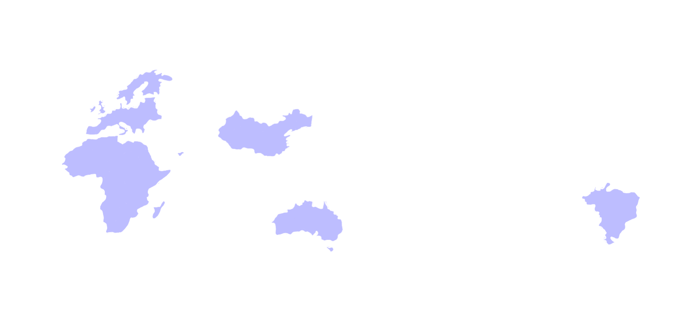
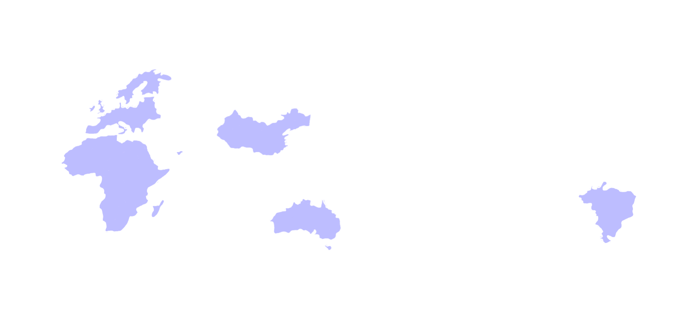

X

GANGWON-DO강원도
빈번하게 발생하는 동해안 산불...피해심각
2022년 3월 3일 60대 남성의 방화로 통해서는 역대 최대 규모의 화재가 발생했다.동해시 2,100ha,강릉 옥계 1,900ha로
총 4,000ha의 산불피해가 발생했다. 양양과 간성, 양양과 강릉 사이에 부는 바람은 태백산맨을 넘어오며 고온건조한 성질
을 띠게 되고 풍속이 빨라진다. 또한 강원도의 산림은 산불에 취약한 소나무 위주이다. 이러한 특성으로 강원도 동해안 지역은
한번 불이 붙으면 짧은시간 큰 피해로 번진다. 더불어 강원도 지역 산림에는 급경사 지역이 많고 산세가 높아 소방 작업도 어렵다.
X

UNITED ARAB EMIRATES아랍에미리트
급격한 도시화...이에 따른 환경문제
아랍에미리트는 급격한 경제발전과 도시화로 여러 환경문제를 겪고있다. 주요 도시인 아부다비와 두바이의 대기오염 문제가 심각하며,
해양지역을 중심으로 난개발로 인한 생태계파괴 문제가 심각하다. 또한 수자원이 부족한 아랍에미리트의 도시화와 인구 증가는
이 지역의 물 부족 문제를 악화시키고 있다.


 
